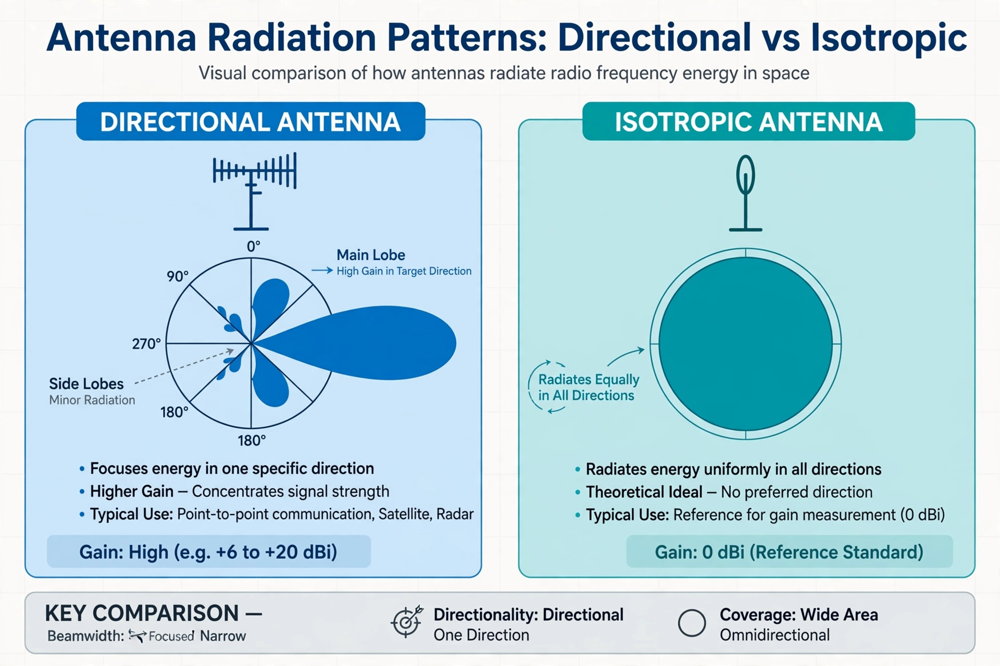

In electromagnetics, an antenna's gain is a key performance parameter that combines the antenna's directivity and radiation efficiency. It describes how well the antenna converts input power into radio waves in a specified direction, compared with a reference antenna. Gain is a passive property: an antenna does not create power, but redistributes it, radiating more strongly in some directions at the expense of others.
Gain in a given direction is defined as the ratio of the radiation intensity in that direction to the radiation intensity that would be produced if the power accepted by the antenna were radiated isotropically (equally in all directions). In symbols, G = 4πU / Pin, where U is the radiation intensity and Pin the total input power. Gain equals directivity multiplied by radiation efficiency.
Gain is usually expressed in decibels. When the reference is an isotropic radiator, the unit is dBi; when the reference is a half-wave dipole, the unit is dBd (a dipole itself has a gain of 2.15 dBi). Gain figures for antennas range from negative values for small lossy antennas to more than 50 dBi for large dish reflectors.
For aperture antennas such as parabolic dishes, gain is related to the effective aperture area A and wavelength λ by G = 4πA / λ². Thus larger antennas and shorter wavelengths produce higher gain and narrower beams, a trade-off fundamental to radio link design, radar, and satellite communications.